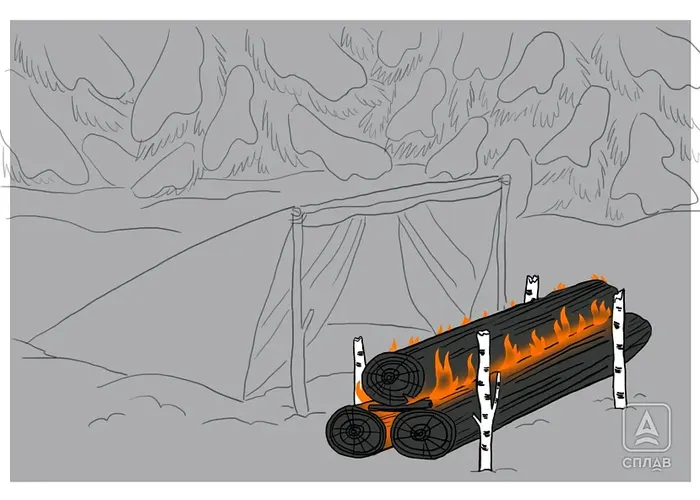

Нодья
Костёр выживальщиков, который позволяет переночевать практически без бивачного снаряжения. Классически — два длинных бревна, уложенных друг на друга и удерживаемых по краям кольями, с растопкой между ними, но встречаются варианты из трёх и даже шести брёвен пирамидой. Брёвна медленно и долго прогорают, равномерно отдавая тепло по всей длине — освещения немного, зато тепло ровное и продолжительное. Готовить не очень удобно, но допустимо. Собрать нодью одному и без опыта трудно, но такой костёр не раз спасал жизни в зимнем лесу.
- Возьмите брёвна от 20 см в диаметре и около 2 м длиной, снимите с них кору.
- Сделайте топором насечки вдоль брёвен со стороны, которой они будут соприкасаться друг с другом.
- Установите по краям ограничительные колья, чтобы брёвна не укатывались во время горения.
- Уложите растопку и мелкие ветки между нижними брёвнами и подожгите.
- Положите верхнее бревно так, чтобы оно не прижималось плотно к нижним — зазор нужен для притока воздуха, иначе костёр потухнет.
- Для ночёвки у нодьи используйте тент или иной отражатель тепла и изоляцию от земли (пенку или лапник), а спальник со стороны костра прикройте плотной тканью, не боящейся искр.
